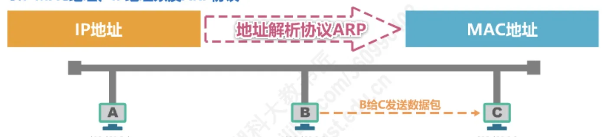
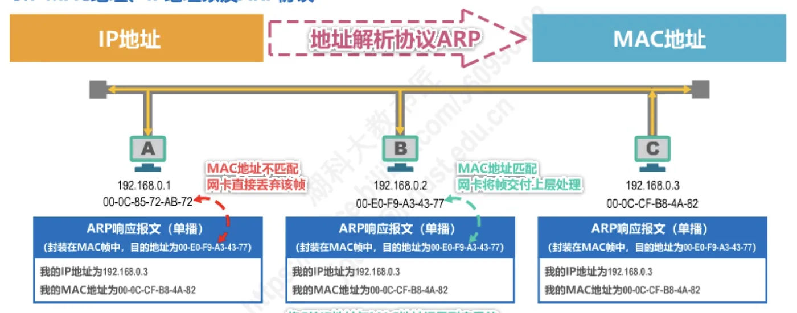

计算机通信与网络 · 第 3 章 数据链路层
3.7 MAC地址、IP地址以及ARP协议（3） —— ARP协议
上一节留下了最后一个问题：每一跳都知道下一跳的 IP 地址，却不知道它的 MAC 地址，链路层首部就填不出来。本节讲的地址解析协议 ARP（Address Resolution Protocol）正是为此而生。我们跟着主机 B 给主机 C 发数据包这一个例子，把「查缓存 → 广播请求 → 单播响应 → 记录并发送」四步走完，再看 ARP 缓存表、作用范围以及它固有的安全隐患。
1. 问题的提出：知道 IP 地址，却不知道 MAC 地址
设主机 B 的 IP 地址为 192.168.0.2、MAC 地址为 00-E0-F9-A3-43-77，它要向主机 C 发送数据包，而 C 的 IP 地址是 192.168.0.3、MAC 地址是 00-0C-CF-B8-4A-82。
B 知道自己要访问的是 C——网络层有 C 的 IP 地址就够了；可数据链路层在封装 MAC 帧时必须填写目的 MAC 地址，即 C 网卡的硬件地址。B 恰好不知道这个值。这就是地址解析协议要解决的问题：已知 IP 地址，求出对应的 MAC 地址。

2. ARP 的工作过程
ARP 的设计很朴素：为了不做无谓的广播，每台主机都维护一张 ARP 高速缓存表，表中记录「IP 地址 → MAC 地址」的映射以及这条记录的类型。要发数据时先查表，查不到才广播询问。下面按顺序走一遍。
（1）先查自己的 ARP 高速缓存表
源主机在自己的 ARP 高速缓存表中查找目的主机的 IP 地址所对应的 MAC 地址：
- 若找到了，直接封装 MAC 帧发送，不必再问任何人；
- 若找不到，则发送 ARP 请求（封装在广播 MAC 帧中）。
本例子中，B 的表中只有 192.168.0.1 和 192.168.0.4 两条记录，查 192.168.0.3 的结果是「未找到」，于是转入下一步。
（2）发送 ARP 请求（广播）
B 发出一个 ARP 请求报文，它封装在目的地址为 FF-FF-FF-FF-FF-FF 的广播 MAC 帧中，因此同一广播信道上的所有主机都会收到。请求报文的内容是：
- 我的 IP 地址为
192.168.0.2； - 我的 MAC 地址为
00-E0-F9-A3-43-77； - 我想知道 IP 地址为
192.168.0.3的主机的 MAC 地址。
各主机收到这个广播帧后，网卡把它交付上层处理，再按 IP 地址对号入座：不是问我的，不用理会；而 IP 地址正好是 192.168.0.3 的主机 C 则知道「问的是我，需要响应」。
（3）目的主机发送 ARP 响应（单播）
主机 C 收到 ARP 请求后做两件事：
- 把源主机 B 的 IP 地址与 MAC 地址记录到自己的 ARP 高速缓存表中；
- 给 B 发送 ARP 响应，告知自己的 MAC 地址。响应报文中包含 C 的 IP 地址
192.168.0.3和 MAC 地址00-0C-CF-B8-4A-82。
与广播的请求不同，响应是单播的：它封装在目的地址为 00-E0-F9-A3-43-77（也就是 B 的 MAC 地址）的 MAC 帧中，直接发给提问者。
（4）源主机收到响应后记录并发送数据
这个单播帧到达 B 的网卡后，网卡比对目的 MAC 地址：不匹配就直接丢弃该帧，匹配才把帧交付上层处理。B 收到 ARP 响应，把 C 的 IP 地址与 MAC 地址记录到自己的 ARP 高速缓存表中，然后就可以封装之前想发送的那个 MAC 帧，并发送给主机 C——至此，数据包才真正出发。

3. ARP 高速缓存表与记录类型
把上面的过程连起来看，B 的 ARP 高速缓存表在解析前后发生了变化——解析成功后新增了一条记录：
| IP 地址 | MAC 地址 | 类型 | 说明 |
|---|---|---|---|
| 192.168.0.1 | 00-0C-85-72-AB-72 | 动态 | 解析前表中已有 |
| 192.168.0.4 | 00-01-C7-D3-B2-B5 | 静态 | 解析前表中已有 |
| 192.168.0.3 | 00-0C-CF-B8-4A-82 | 动态 | 收到 ARP 响应后新增 |
表中记录分两种类型，它们的来源和寿命不同：
- 动态（dynamic）：自动获取，生命周期默认只有两分钟，过期即被删除，下次用时重新解析；
- 静态（static）：手工设置，不同操作系统下的生命周期不同，例如有的系统重启后就不存在了，有的系统重启后依然有效。
动态记录保证映射能跟上网络变化（比如某台主机换了网卡），静态记录则用于需要稳定映射的场合。
4. ARP 的作用范围与几点说明
ARP 的解析是「逐段链路」进行的：ARP 的作用范围是一段链路或一个网络。也就是说，数据包每经过一个网络、进入下一段链路，都要重新做一次地址解析——解析出的永远是「下一跳接口」的 MAC 地址，而不是最终目的主机的 MAC 地址。这与上一节「MAC 地址逐个链路改变、IP 地址始终不变」的结论正好互相印证。
还有两点值得一并记住：
- 除 ARP 请求和响应外，ARP 还有其他类型的报文，例如用于检查 IP 地址冲突的无故 ARP / 免费 ARP（Gratuitous ARP）；
- ARP 没有安全验证机制，任何人都可以声称某个 IP 地址对应自己的 MAC 地址，因此存在 ARP 欺骗（ARP 攻击）问题。这也是为什么在公共网络中不能仅凭 ARP 结果就信任通信对端的身份。
本节小结
- ARP 要解决的问题：已知下一跳的 IP 地址，求出对应的 MAC 地址，使数据链路层能填写目的 MAC 地址；
- 工作过程四步：查自己的 ARP 高速缓存表 → 未找到则广播 ARP 请求（目的 MAC 为 FF-FF-FF-FF-FF-FF）→ 目的主机单播 ARP 响应并顺手记下源主机的映射 → 源主机记下映射后封装并发送原来的 MAC 帧；
- ARP 高速缓存表的记录分动态（自动获取，默认两分钟生命周期）和静态（手工设置，生命周期随操作系统而异）；
- ARP 的作用范围是一段链路或一个网络，每经过一段链路都要重新解析，解析出的只是下一跳接口的 MAC 地址；
- ARP 报文不止请求与响应两类（还有用于检查 IP 地址冲突的免费 ARP 等），且缺少安全验证机制，存在 ARP 欺骗问题；
- 把三小节连起来看：MAC 地址负责同一网络内的寻址，IP 地址负责跨网络的寻址，ARP 负责在两者之间搭桥——这正是因特网寻址体系的分工。